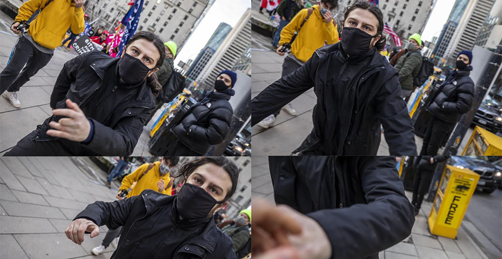
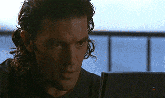
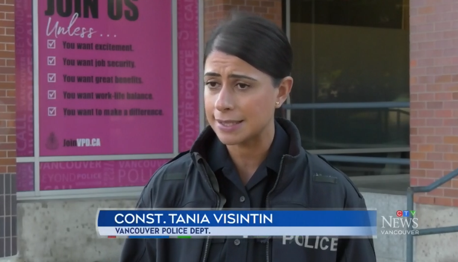

CBC Propagandist Given Small Justice in Vancouver
January 9th, 2021
I have not been this overjoyed in years!
CBC:
TDC_ARTICLE_START
A demonstrator at a small pro-Trump rally in downtown Vancouver attacked a photojournalist who was there documenting the scene on Wednesday afternoon.
Award-winning CBC photojournalist Ben Nelms was on assignment outside the Vancouver Art Gallery when it happened.
TDC_ARTICLE_STOP

I have to say, I like where this is going!
TDC_ARTICLE_START
“I was taking pictures of the group of protestors when one of the men charged at me and punched me in my face unprovoked,” Nelms said in a statement.
The individual appeared to be upset that Nelms and other journalists were taking pictures and reporting on the event, he added.
“Physical violence against members of the media is wrong and doesn’t just happen outside of Canada, but here in Vancouver,” Nelms said.
The entire incident was captured by Nelms as he took photos.
TDC_ARTICLE_STOP

Now I know, I know, this is definitely another case of some propagandist whining about bullshit again. He wasn't injured, unfortunately. He wasn't really attacked, he's just a whiny little bitch. I'll bet he got slightly grazed by a knuckle and went down in a heap, screaming and rolling around on the ground.

CBC Propagandist Ben Nelms, very punchable face
But let me enjoy this moment, sheesh.
TDC_ARTICLE_START
Vancouver Police Department spokesperson Const. Tania Visintin said they are aware of a victim who was punched in the face around 2 pm. The suspect took off before officers got there, but she added police are “actively investigating.”
TDC_ARTICLE_STOP
VPD Spokesperson Tania Visintin
I have to say, fuck the VPD, but they managed to get a real cutie to be their spokesperson. I wouldn't mind letting her handcuff me, if you know what I'm sayin. I mean I wouldn't mind assaulting her (consensually) with a deadly weapon, if you catch my drift there goy.
More to the point, good on that Trump Supporter for dealing with the Weapons of Mass Destruction Liars the way they should be dealth with. It's nice to see some justice in this world. And no, I have zero belief that the VPD is actually going to catch this man.